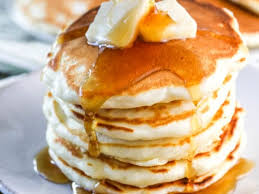

Pancakes

Fluffy pancakes that make for the best breakfast ever!
Ingredients
- 1 1/2 cups of all-purpose flour
- 3 1/4 teaspoons of baking powder
- 1/4 teaspoon of salt
- 1 tablespoon of sugar
- 1 1/4 cups of milk
- 1 egg
- 3 tabelspoons of butter (melted)
Directions
- In a large bowl, sift together the flour, baking powder, salt and sugar.
- Make a well in the center and pour in the milk, egg and melted butter; mix until smooth.
- Heat a lightly oiled griddle or frying pan over medium-high heat.
- Pour or scoop the batter onto the griddle, using approximately 1/4 cup for each pancake.
- Brown on both sides and serve hot.